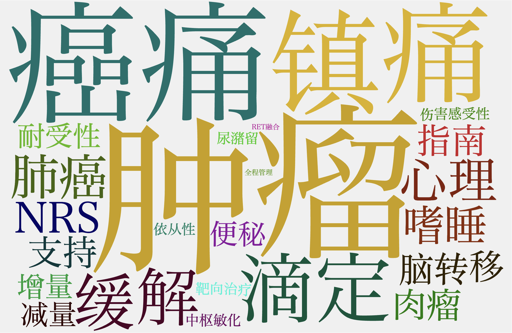

基本信息
这里显示会议的基本信息内容...
✦ 会议效果记分卡
{{ item.title }}
{{ item.score }}
✦ 会议待办事项
✦ 会议总览
会议摘要
讲者讲课时长总计
{{ speakerTime }} 小时
会议时长
{{ meetingDuration }} 小时
参会人次
{{ participantCount }} 人
会议计划时长
{{ plannedMeetingDuration }} 小时
参会人时长占比
参会人级别占比
✔ 3大亮点
💡 3大机会点
会议节奏与动态把控
讲听比: {{ meetingPacing.talkListenRatio.talk }}% / {{ meetingPacing.talkListenRatio.listen }}%
讲座与主持
开放式讨论
会议流程可视化:
-
{{ item.time }}: {{ item.event }}
AI洞察:
{{ meetingPacing.aiInsight }}
✦ 会议沟通 & 互动分析
会议词云:
客户洞察与互动质量
识别出的关键问询:
{{ customerInsight.identifiedQuestionsCount }}个
| 议题 | 发起/参与者 | 洞察 | 原文佐证 |
|---|---|---|---|
| {{ item.topic }} | {{ item.participants }} | {{ item.insight }} | |
|
{{ item.evidence }} |
|||
待处理的医学问询
来源: {{ customerInsight.pendingInquiry.source }}
AI识别的问题原文: "{{ customerInsight.pendingInquiry.query }}"
✦ 信息传递有效性分析（演讲内容与议程契合度）
{{ speaker.name }} ({{ speaker.duration }}) {{speaker.level}} 级
{{ speaker.focus }}
评估结论:
{{ keyword }}核心主题
契合度与偏差分析:
{{ fb }}
✦计划与执行差异分析
核心讲者出席率:
{{ planVsActualData.coreSpeakerAttendanceRate }}
| 项目 | 计划 (Planned) | 实际 (Actual) |
|---|---|---|
| {{ item.project }} | {{ item.planned }} | {{ item.actual }} |
✦会议点评与案例启示
{{ group.title }}: {{ group.description }}